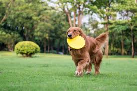
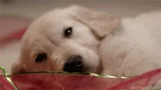
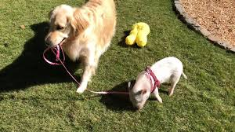
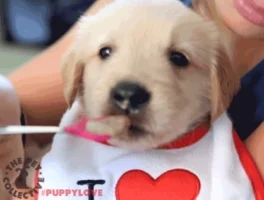

How To Take Care Of A Golden Retriever
In this article
How to Set Up for Your Golden Retriever
Make sure your home is safe for a dog. It is important to puppy-proof your home before you bring your new dog home. This is true even if he is not a puppy; even older dogs can get into trouble in a new environment. It will take some time for you to know what he will and will not get into. Make sure that you remove cords that he might chew on, take glass items off of low tables where he might knock them off or try to chew on them, and put away items that you don’t want your dog to take. Yes, this includes your shoes!

Think about how you will keep him in your yard. Even if you plan to train your dog to stay in the yard with you, during the training process, you will need a way to keep him contained. Also, any dog can decide to take off after a rabbit or some other wild animal that runs through your yard. A fence is best. Another option is to consider an invisible fence. Or you can install a tether so your dog can go outside to relieve himself. Do not plan on leaving your Golden Retriever outdoors unattended or for long periods of time.

Provide your Golden Retriever with a place to sleep. You might envision your dog sleeping on your bed with you, and that is fine, but it is best to also offer him a place away from others. Many people choose to buy a crate for their dogs. It will need to be large enough for him to stand up and turn around in easily. (Read our article on how to crate train your dog for tips on getting your Golden Retriever accustomed to his new crate.) You also might decide to get a dog bed, which will be a good place for him to go when he doesn’t want to be bothered.

Buy a leash and collar or harness. You will need to teach your new furry friend how to walk nicely on a leash. Purchase one that is six feet long for training. You should also choose a collar. A buckle collar is one option, and a martingale collar is another. Choke collars and prong collars should generally be avoided. You can also choose a harness, which puts less pressure on Golden’s neck and can even prevent pulling in some cases.

Purchase food and water bowls. You will need to choose food and water dishes that won’t be knocked over easily. Since a Golden will likely pick up food dishes and carry them around when they are empty, choose a material that he won’t be able to chew through easily. Also, don’t buy a ceramic bowl that he could drop and break.

How to Feed Your Golden Retriever
- Choose a high-quality dry dog food. You can ask your veterinarian or the breeder or rescue for a recommendation. Note that if you want to switch her over to a different type of food, you should do so gradually over a period of a few weeks to minimize stomach upset. For a puppy, buy a large breed puppy food; for an adult, you can choose an adult food. Older dogs can benefit from food made for senior dogs.
- Look on the package to determine how much to feed your dog. Find your dog’s age and weight on the chart on the bag and divide that amount of food by the number of times you would like to feed your dog each day. Puppies under 6 months of age should generally eat three times per day and older puppies and adults should eat twice per day.
- Mix extras into your dog’s food if desired. You can mix canned dog food, chopped plain cooked chicken breast, low-salt cottage cheese, canned pumpkin, or plain yogurt into her food. Use only a little of the extras; it’s just to add taste and interest. If you begin doing this, your dog will probably not want to eat plain food, so make this decision knowing you will have to keep up with it later.
- Give your dog treats occasionally. It is fun to feed your Golden treats; just don’t let them become a large part of her diet! A couple of dog biscuits or some dog jerky each day will make her eager to come to you when you call. Also, you can break up dog “cookies” into smaller pieces to use for training.
- Be sure she has fresh water at all times. She will likely drop dog kibble and dog fur into her water dish frequently, so wash it out at the end of each day and refill as needed so that it is always full of fresh, clean water.
How to Know If Your Golden Retriever Is Happy and Healthy
- Read a book about caring for Golden Retrievers. A good book will tell you what to expect and how to keep your pet happy and healthy.
- Check over her body regularly. When petting her, check for any lumps or bumps. Also, if she flinches when you touch a certain body part, make note of it and call your veterinarian if it continues.
- Check her feet. Make sure her foot pads aren’t cracked and that her nails aren’t too long. Learn how to use dog nail clippers to keep her nails clipped to the right length. You can also ask a groomer to do it for you.
- Watch her as she moves. Goldens are sometimes prone to developing hip dysplasia. If your dog is stiff when getting up or limps on a back leg, this is worth getting checked out.
- Your Golden Retriever can live for about 10 years, so with good care and regular veterinary attention, you should be able to enjoy a decade with your new pet. Enjoy!